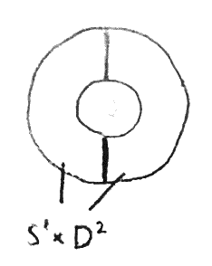
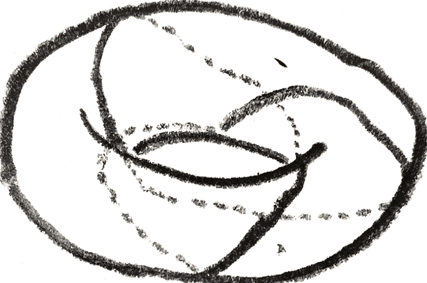
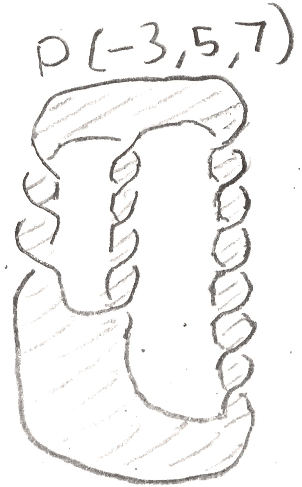
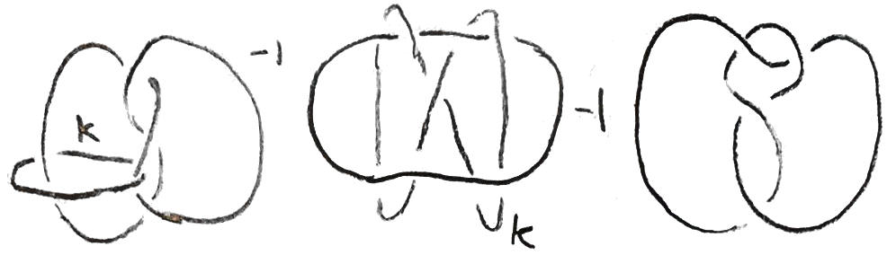

A natural goal in topology is to try to understand manifolds. Here, unless specified, a manifold will be connected, compact, oriented, smooth, and boundaryless. In very low dimensions it is easy to see all the manifolds: In dimension \(1\) the only example is the circle, and in dimension \(2\) we have the genus \(n\) surfaces. In dimension \(3\), one cannot see all the examples as easily. Nevertheless, there are methods to represent a \(3\)-manifold that can allow one to see them. Moreover it isn’t too hard to show that all \(3\)-manifolds can be represented in these ways. Two of these ways are via Heegaard diagrams and Kirby diagrams.
The first few examples of a 3-manifolds one might come up with are products of spheres: \(S^3, S^2\times S^1\), and \(S^1\times S^1\times S^1\). How can we try to see these? Well \(S^3\) is probably the most easy to see: we can view it as the one point compactification of \(\RR ^3\). The other two are naturally imagined as quotients of objects inside \(\RR ^3\). For example, we might imagine \(S^2\times S^1\) as a thickened version of the standard \(S^2 \subset \RR ^3\), i.e. a copy of \(S^2 \times [0,1]\), with the inner and outer layers identified, and we might imagine \(S^1 \times S^1 \times S^1\) as a cube with opposite boundaries identified.
However, if we are to come up with a general way of seeing 3-manifolds, we should try to find a uniform way of doing things. One way to try to do this is to try to decompose a \(3\)-manifold into simpler things. For example, for our model of \(S^2\times S^1\) as a quotient of \(S^2 \times [0,1] \subset \RR ^3\), we can cut our model down the middle in \(\RR ^3\) as in Figure 1, dividing it into two copies of \(D^2 \times S^1\), glued together along their boundary \(S^1 \times S^1\).

Now \(D^2 \times S^1\) is just a solid torus, so to represent \(S^2 \times S^1\) we just need to have a way of representing the isotopy class of the gluing map of its torus boundary which is an oriented diffeomorphism of the torus. In fact, we only care about the isotopy class of the diffeomorphism of the torus. Note that if you view the solid torus as a ball with a handle attached, by removing a small thickened disk with boundary the meridian circle of the handle, you are left with a ball.
Now there is only one isotopy class of orientation preserving diffeomorphisms of \(S^2\), so if we first attach the meridian circle of the handle, we can then attach the thickened disk, and then we only have a ball left to attach, and there is one way to do this. Thus the only relevant data is the way in which the meridian circle of one solid torus is attached to the other. In this case, from our visualization of \(S^2\times S^1\) it is easy to see that the meridian circle is sent to the same circle with the opposite direction. Thus we can draw a diagram in which we have flattened out the torus, drawn the meridian circle \(\beta _1\) and its image, \(\alpha _1\):
To see \(S^2\times S^1\) from this diagram, we take a solid torus, attach a thickened disk along \(\alpha _1\), giving us a \(3\)-manifold with boundary \(S^2\). We then fill in the hole with a \(D^3\) to get \(S^2\times S^1\).
Thus, if we can find a decomposition of any \(3\)-manifold into two handlebodies of genus \(n\), which are \(D^3\)s with \(n\) handles attached, we can represent that \(3\)-manifold with such a diagram. Such a decomposition is called a Heegaard splitting of genus \(n\), and the diagram is called a Heegaard diagram.
For \(S^3\) we can get a genus \(0\) Heegaard splitting by taking any ball and its complement. Its Heegaard diagram consists of just a flattened out sphere. Note that since the Heegaard diagram determined the manifold and there is only one genus \(0\) Heegaard diagram, there is only one \(3\)-manifold with a genus \(0\) Heegaard splitting. A more interesting example is taking the standard torus inside \(S^3\), and looking at it and its complement. In fact we can construct the new Heegaard splitting from the old one by taking our ball and adding an unknotted handle to it. This process is called stabilization. If we keep doing this to our original Heegaard splitting of \(S^3\), we will get a series of Heegaard splittings corresponding to the standard genus \(n\) handlebody in \(S^3\). An example of stabilization and the corresponding Heegaard diagrams are shown.
Two Heegaard splittings are the same if the attaching maps on the boundaries are the same (in the same isotopy class). We say that two Heegaard splittings of a \(3\)-manifold are stably equivalent if after stabilizing some number of times they become the same. The standard genus \(n\) solid tori in \(S^3\) all clearly give stably equivalent decompositions
Finally, let’s consider \(S^1\times S^1 \times S^1\). We can make a genus \(3\) Heegaard decomposition by adding \(3\) thickened axes to our cube. If we view \(S^1\) as a group, we can translate these thickened axes to see that the complement is also 3 thickened axes, hence also a genus \(2\) handlebody.
In fact in general we can produce Heegaard splittings, all of which are stably equivalent. There is a way to do this either within the category of smooth \(3\)-manifolds via Morse theory, or in the PL category via a deep theorem says that in dimensions \(\leq 4\), PL manifolds are the same as smooth manifolds. We will stick to thinking about triangulations here, but one can note that working with triangulations of a smooth manifold is essentially a special case of Morse theory: indeed, given a triangulation, one can construct a Morse function whose index \(k\) critical points occur in the center of the \(k\)-simplicies. Then facts and constructions with our triangulation can correspond to facts about this Morse function we have constructed.
Proposition 1.1. Every compact orientable \(3\)-manifold admits a Heegaard splitting. Moreover, any two such splittings are stably equivalent.
Proof. The existence of such splittings really amount to the following picture:
Namely, given a triangulation of our manifold, we can thicken the \(1\)-cells and \(0\)-cells to get a subspace which is clearly a handlebody as is its complement. The fact that they are all stably equivalent is technical, and the proof can be found in [Sin33]. □
Hence, we can define the Heegaard genus of a \(3\)-manifold \(M\) to be the smallest genus of any Heegaard decomposition. We have already seen that the only genus \(0\) manifold is \(S^3\). \(S^2\times S^1\) is then genus \(1\), and \(S^1\times S^1 \times S^1\) has genus \(\leq 3\). In fact, we can say that it is exactly \(3\), since by the Seifert-van Kampen theorem, the Heegaard genus is lower bounded by the rank of \(H_1(M)\).
Now that we have the notion of Heegaard genus, we naturally get a new class of relatively simple \(3\)-manifolds, those of genus \(1\). We can understand all the Heegaard splitting of genus \(1\) by understanding the oriented mapping class group \(\oMCG \) of the torus, i.e. the isotopy classes of orientation preserving diffeomorphisms. We will use the following result:
Now we can see the mapping class group as follows: take the two circles \(\gamma \) and \(\lambda \), and do Dehn twists in either direction on them, shown below:
If we use \((\gamma ,\lambda )\) as our basis for homology, then the Dehn twists act on homology by the matrices \(\begin{bmatrix} 1 && \pm 1\\ 0 && 1 \end{bmatrix}\) and \(\begin{bmatrix} 1 && 0\\ \pm 1 && 1 \end{bmatrix}\). These generate \(\SL _2(\ZZ )\), and since orientation preserving homeomorphisms act on \(H_1\) within \(\SL _2(\ZZ )\), we have
Corollary 1.3. \(\oMCG (S^1\times S^1) = \SL _2(\ZZ )\), generated by Dehn twists on \(\lambda , \gamma \).
Now that we understand this mapping class group, we can classify genus \(\leq 1\) \(3\)-manifolds. Note that the image of \(\gamma \) determines the manifold, because after a neighborhood of \(\gamma \) and the disk it bounds is attached, there is only a sphere left to attach, and there is a unique way to do this. The attaching map is an orientation reversing diffeomorphism of the torus, and on homology it acts as an element of \(\begin{bmatrix}-1 & 0\\ 0 & 1\end{bmatrix}\SL _2(\ZZ )\). Since we only care about the image of \(\gamma \) only the \(p,q\) of \(\begin{bmatrix} -q && a\\ p && b\end{bmatrix}\) matter, which tells us the image of \(\gamma \), is the important data. We will call the resulting space the lens space \(L(p,q)\). When \(p = 0\), we just get \(S^2\times S^1\), and when \(q = 0\), we get \(S^3\). For \(p \neq 0, q \neq 0\), there is another description of the lens spaces for \(p\geq 1\) as follows: we will view \(S^3\) as the unit sphere inside \(\CC ^2\), and we can consider the \(\ZZ /p\ZZ \) action given by multiplication by \((\zeta _p,\zeta _p^q)\), where \(\zeta _p\) is a primitive \(p^{th}\) root of unity.
This action is free, and the lens space is in fact the quotient. To see this, we can first consider an action of \(S^1\subset \CC ^\times \) on \(L(p,q)\) given by multiplication by \((x^{1/p},x^{q/p})\). This action is free on all \((w,z) \in L(p,q)\) except the circle where \(w = 0\), where the action wraps around the orbit \(q\) times. If \(z = 0\), there is one orbit, and if \(w \neq 0, z \neq 0\), there is a unique representative of each orbit of the form \((w,z), w \in (0,1), z \in S^1\), so we see that the quotient space is a cylinder with both ends capped off with the points \(w = 0\) and \(z = 0\). In other words the lens space is an \(S^1\) bundle over a sphere that is locally trivial except maybe at \(w = 0,z = 0\).
Indeed it is not locally trivial over \(w = 0\), but nevertheless, it is in a nice form near that point. Namely, we can say that given a rational number \(\frac{q}{p}\), we can form an \(S^1\) bundle called the standard fibred torus. This is given by considering \(D^2\times \RR \) where we identify \((a\zeta _p^q,b)=(a,b+1)\). There is a natural action of \(\RR \) that descends to an action of \(S^1\), yielding a bundle that is trivial except maybe at \(0 \times \RR \), the exceptional fibre. Rational numbers differing by an integer give the same fibre bundle, and only \(0\) gives the trivial bundle (or even a locally trivial bundle). We can see that the part of the lens space with \(|w|^2 \leq \frac 1 2\), \(|z|^2 \leq \frac 1 2\) are each standard fibred tori. Indeed, let \(kq+rp=1\), so that at \(|w| \leq \frac 1 2\), we have a map of \(S^1\) actions from the \(\frac r q\) fibred torus given by \((a,b) \mapsto (a\zeta _{pq}^b, \zeta _p^b\sqrt{1- |a|^2})\). This is a surjective map, so it shows that the lens space \(L(p,q)\) can be obtained by taking the standard fibred \(\frac r q\) solid torus, and identifying fibres on the boundary.
With a little more work it also gives a Heegaard decomposition. We can consider an embedding of \(\frac 1{\sqrt{2}}D^2\times S^1\) (here \(S^1\) is \([0,1]/{0=1}\)) given by \((a,b) \mapsto (\zeta _p^b\sqrt{1-|a|^2},\zeta _{p}^{bq}a)\). The boundary of this torus is attached to the boundary of a thinner version of the standard fibred torus, giving a genus \(1\) Heegaard splitting. To see the attaching map, we only need to look at the image of \(\frac 1{\sqrt{2}}S^1\times 0\). This is the circle given by \(w= \frac 1{\sqrt{2}}\), whose preimage under the map from the fibred torus consists of \((a,b) \in \frac{1}{\sqrt{2}}S^1\times \RR \) with \(a = \frac 1{\sqrt{2}} e^{-2\pi i \frac b{pq}}\). We can see that it wraps around the meridian \(-k\) times and around the longitude \(p\) times, since a full loop happens when \(b\) goes from \(0\) to \(k\), in which case we have \((\frac 1{\sqrt{2}}\zeta _q^{-1},p) = (\frac 1{\sqrt{2}}\zeta _q^{rp-1},0) = \zeta _q^{-kq}\). This is the gluing map for \(L(p,k)\). Note that if we reverse the roles of the solid tori, the matrix representing the gluing map is inverted, so this is also \(L(p,q)\). By looking at the fundamental group, \(p\) is an invariant of \(L(p,q)\). \(q\) is not, as we have seen, we can replace \(q\) by \(q+kp\) or its inverse mod \(p\).
We have seen that the lens spaces have many decompositions as \(S^1\) bundles that are locally trivial except at a few fibres, where it is modeled from the standard fibred torus. A \(3\)-manifold that is constructed this way is called a Seifert fibre space. Quite a lot of \(3\)-manifolds are Seifert fibre spaces, especially simple ones like the lens spaces.
The bundle map is of a Seifert fibre space is sometimes in itself of interest. For example when \(p=q=1\), this is just the Hopf fibration: the generator of \(\pi _3(S^2)\), and this fibration factors through \(\RR \PP ^3\), giving the Seifert fibration for \(p=2,q=1\). We can draw a picture of our explicit description of \(\RR \PP ^3\) given by a quotient of a standard fibred torus. Namely, take a solid torus, and collapse each line such as the one drawn below to a point. Then each disk turns into a copy of \(\RR \PP ^2\), except that each copy of \(\RR \PP ^2\) shares a circle in common. By removing one of these \(\RR \PP ^2\), we are left with an open disk times an open interval, which is the cell decomposition \(\RR \PP ^3 = \RR ^3\cup \RR \PP ^2\).
Our initial construction of a lens space amounted to removing a neighborhood of a standard circle in \(S^3\), and reattaching the neighborhood by a certain diffeomorphism of the torus. This process is called rational Dehn surgery. If the meridian of the removed torus is sent to some longitude on the complement, it is called integral Dehn surgery. These notions make sense in an arbitrary \(3\)-manifold, but if the \(3\)-manifold is \(S^3\), we can assign a rational number to rational surgery and an integer to integral surgery. To do this note that on the boundary of the neighborhood of the circle, there is a canonical longitude, namely the one that is trivial in homology of the complement of the circle. Then the rational surgery \(\frac p q\) is given by sending the meridian of the removed solid torus to \(q\) times the longitude plus \(p\) times the meridian. If \(q = 1\), then indeed the surgery sends the meridian to a longitude, and is given by an integer. To better understand what is going on, we can introduce the following notion:
A link is a smooth embedding of a bunch of circles into a \(3\)-manifold. We care about links up to an isotopy of the embedding. We call a link with one component a knot, and for now, the \(3\)-manifold will be \(S^3\). Later we will study links in homology spheres, as much of the theory in \(S^3\) works in a homology sphere. We say that the standard circle in \(S^3\) is the unknot, and that \(n\) separated unknots in \(S^3\) is the unlink.
A link in \(S^3\) has a projection, which is a presentation as a drawing in \(S^2\) (or \(\RR ^2\)) such as the one below:
A basic theorem of Reidmeister says that any two projections of the same link are related by a sequence of Reidmeister moves, shown in Figure 10.

Given a link in a \(3\)-manifold, we can do rational surgery on it as described above, which is clearly well defined up to isotopy.
We would like to generalize our understanding of genus \(1\) \(3\)-manifolds to those of higher genus. Unfortunately, the mapping class group of higher genus surfaces is more complicated, but the following theorem still holds:
Theorem 1.4. Dehn twists on the circles shown below on the genus \(g\) surface generate the mapping class group of the surface.

Thus given two Heegaard splittings of the same genus, we can do Dehn twists along these circles to move between them. However, changing the attaching map of a genus \(g\) handlebody by a Dehn twist on a circle amounts to doing integral surgery on that circle. To see this, take a neighborhood of the circle \(\gamma \), translate the circle to a \(\gamma '\) that is on the boundary of this neighborhood, and reglue in the neighborhood such that the meridian is sent to the meridian plus this longitude. This does nothing to each of the handlebodies, but clearly changes the gluing map by a Dehn twist.
There is a \(4\)-manifold picture of what is happening in integral Dehn surgery. Namely, it gives an oriented cobordism between the old and new \(3\)-manifolds \(M, M'\) as follows: start with the product \(M\times [0,1]\), and we can attach a \(2\)-handle to the part of the boundary \(M \times 1\) that will yield \(M'\) as follows: we have \(\partial (D^2\times D^2) = S^1 \times D^2 \cup _{S^1\times S^1} D^2\times S^1\). We attach \(D^2\times S^1\) to the neighborhood of the circle we are doing surgery on, sending the standard longitude of \(D^2\times S^1\) to a longitude \(l\). Then this \(D^2\times S^1\) is no longer part of the boundary of the resulting \(4\)-manifold, but rather \(S^1\times D^2\) is, and it is attached to the rest of the \(3\)-manifold boundary along its boundary \(S^1\times S^1\) by sending its meridian to \(l\).
Since Dehn twists generate the mapping class group, we can start with a Heegaard splitting of \(S^3\) of high enough genus, and do enough integral surgeries on it to get any \(3\)-manifold. \(S^3\) bounds \(D^4\), so we get the following theorem:
Theorem 1.5. Every \(3\)-manifold can be constructed by doing integral surgery on a link in \(S^3\). Moreover, doing this surgery gives a cobordism to \(0\).
Thus we can represent a \(3\)-manifold by a framed link, which is a link where every component has an integer attached to it. The integer specifies what kind of integral surgery it is. If we draw the link, it is called a Kirby diagram. More generally we can have a rational framing, but these don’t give a cobordism.
For example, a rational framing of the lens space \(L(p,q)\) is given by the following:

To turn this (or any rationally framed link) into an integrally framed link, we can use the fact that the following operation on Kirby diagrams preserves the \(3\)-manifold represented:

To see this, note that after doing \(k\) surgery on the larger knot, the longitude of the neighborhood of that knot is sent to the meridian. Thus our \(\frac p q\) framed unknot can be slid into the surged torus so that it lies at the center of the torus. Then we can make the neighborhood of the unknot be exactly the torus that was surged in, so that doing the surgery only changes the attaching map. To see how it changes the attaching map, note that since \(\frac p q\) surgery specifies the attaching map from the exterior to the torus, we need to put in a \(\begin{bmatrix} 0 & 1\\ 1 & 0 \end{bmatrix}\) to account for the fact that we are changing the attaching map from the interior to the exterior. We compute the new attaching map as: \[ \begin{bmatrix} -1 & 0\\ k & 1 \end{bmatrix}\begin{bmatrix} 0 & 1\\ 1 & 0 \end{bmatrix}\begin{bmatrix} -q & \bullet \\ p & \bullet \end{bmatrix} = \begin{bmatrix} -p & \bullet \\ pk-q & \bullet \end{bmatrix} \]
We don’t really care about what the dots are, and we see that we are left with \(\frac{pk-q} p = k-\frac q p\) surgery on the knot. Thus we can inductively define a continued fraction expansion of a rational number by \([x_0] = x_0\) and \([x_0,\dots ,x_n] = x_0-\frac 1{[x_1,\dots ,x_n]}\). If \(\frac p q = [x_0,\dots x_n]\), then by induction we have the following two diagrams represent the same \(3\)-manifold:

We can construct lots of interesting examples of Seifert fibre spaces by starting with \(S^1\times S^2\), and replacing little neighborhoods \(S^1\times N\) with the standard fibred tori, which amounts to doing rational surgery. Since \(S^1\times S^2\) is obtained from \(0\) surgery on an unknot, these Seifert manifolds, denoted \(M((a_1,b_1),\dots ,(a_n,b_n))\) have the Kirby diagram shown below:

Sometimes a \(3\)-manifold will admit a Kirby diagram where all components are unknots, and they are all linked in a simple way such as below, and so the \(3\)-manifold can be represented by a weighted graph:
We say that the \(4\)-manifold associated to such a diagram is plumbed, because we can rephrase our description of the \(4\)-manifold associated to this diagram as follows: for each vertex with weight \(k\), start with the manifold \(E_n\), the disc bundle associated to a complex line bundle over \(S^2 = \CC \PP ^1\) with Euler class \(k\). Now whenever two edges \(e_1,e_2\) are connected, trivialize two neighborhoods of each of the associated disk bundles to get two copies \(D^2\times D^2\) and identify them via \((x,y)_1 = (y,x)_2\). It is easy to see that this is the same \(4\)-manifold after realizing that \(E_k\) is the manifold obtained from doing \(k\) surgery on an unknot to \(S^3 = \partial D^4\). The Seifert manifolds \(M((a_1,b_1),\dots ,(a_n,b_n))\) are all plumbed, which is seen by taking a continued fraction expansion of the \(\frac{a_i}{b_i}\) as in Figure 15.
The final example of \(3\)-manifolds are those that arise from singularities of complex surfaces. If we have a closed complex hypersurface of \(\CC \PP ^3\) with finitely many singular points, we can take a small ball around any singularity, and intersect its boundary with the surface. This will give a \(3\)-manifold, which will certainly be \(S^3\) if the point was non-singular. A classical result of Mumford [Mum66] says conversely that if the \(3\)-manifold is simply connected, then the point is non singular, hence it is \(S^3\). Thus how much the \(3\)-manifold differs from \(S^3\) reflects how singular the point is. There is really more information than just the \(3\)-manifold, however, which is the way in which the \(3\)-manifold is embedded into the the boundary of the small ball, \(S^5\). This is an example of a higher dimensional knot.
There is a theorem in algebraic geometry that says that one can resolve the singularity by repeatedly doing an operation to the point of the surface called blowing up. Roughly speaking, this operation takes out the singular point, and replaces it with a point for each tangent line going through the point on the surface. We will see in the next section what blowing up means on the level of \(3\)-manifolds. The collection of all of these points forms a (complex) curve called the exceptional curve. After blowing up many times, our surface becomes smooth, but we are left with a number of these exceptional curves that can tell us about the singularity. In particular we can recover the \(3\)-manifold associated to the singularity. Namely, we can compute the algebraic intersection numbers of these curves with each other and themselves to get an “intersection graph” where the vertices correspond to the curves and are weighted with the self intersection number of the curve, and two vertices are connected if the corresponding curves intersect. For sufficiently nice singularities (see for example [Sav02]), this graph is exactly the plumbing graph that tells us how to construct the \(3\)-manifold via surgery.
For example, the Poincaré homology sphere, whose graph is shown in Figure 17, arises from the singularity at the origin of the hypersurface given by \(x^2+y^3+z^5=0\). This singularity is exactly the singularity that arises by taking the plane \(\CC ^2\), and quotienting by the action of the binary icosahedral group. This is an order \(120\) subgroup of \(\SU (2) = \Spin (3)\) that is given by taking the symmetry group of the icosahedron, which is an order \(60\) subgroup of \(\SOr (3)\), and pulling it back via the covering map \(\Spin (3)\to \SOr (3)\). In particular, the binary icosahedral group is the fundamental group of the Poincaré homology sphere.

We can thus visualize the Poincaré homology sphere by viewing it as a quotient of \(\SOr (3) = \RR \PP ^3\). Namely, view \(\SOr (3)\) as the space of unit tangent vectors on \(S^2\), and identify two tangent vectors if there is a symmetry of the icosahedron taking one tangent vector to the other. We can easily see the symmetry group of the icosahedron by noting that it acts simply and transitively on the pairs consisting of a vertex of the icosahedron and an adjacent edge.
The lens spaces also arise in this manner, since as we have already seen, they arise from the singularity of quotienting by the \(\ZZ /p\ZZ \) action generated by multiplication by \((\zeta _p,\zeta _p^q)\).
It is quite nice that we can represent \(3\)-manifold using Kirby diagrams, but there are a lot of basic questions we can ask about these diagrams. For example, when do two Kirby diagrams give the same manifold? There are two operations on diagrams, called the Kirby moves, that we can do that give the same \(3\)-manifold.
The first thing to note is that if the diagram has two components that are unlinked, meaning that they can be separated from each other, the manifold we get is the same as the connected sum of the corresponding manifold for each component. The first Kirby move, \(K1\), is given by adding or removing an unlinked \(\pm 1\) framed knot from the diagram, which by our realization that \(S^3\) is \(L(1,\pm 1)\) amounts to taking a connected sum with \(S^3\), giving the same manifold. Note however that the \(4\)-manifold that the \(3\)-manifold bounds is changed.

The second Kirby move, is called sliding over, and requires the notion of linking number \(L(K_1,K_2)\) of two oriented knots \(K_1, K_2\) in a homology sphere. There are several notions of linking number that are easily seen to be equivalent. The first can be seen by looking at a knot projection, taking the number of positive crossings minus the number of negative crossings that occur between the two components, and dividing by \(2\). It is clear that the linking number is symmetric and changes sign if we change the orientation of one of the knots.

The second definition is to first remove one of the knots from \(S^3\). The first homology has a canonical generator, given by the meridian (this needs the knot and \(S^3\) to be oriented). Then we can define the linking number to be the homology class that \(K_2\) represents in the complement. It is easy to see that via a projection, this coincides with the previous definition.
The third definition uses a Seifert surface, which is a (connected orientable) surface with boundary \(K_2\). It will later be seen that these always exist, but given one, we can perturb it to intersect \(K_1\) transversely, and define the linking number to be the intersection number. To see that this is the same, just note that if we remove small neighborhoods of the intersection points from the Seifert surface, we get a surface that shows that \(K_2\) is homologous to some sum of meridians.

Now that we have a notion of linking number, we can define the canonical longitude of a knot to be a parallel knot with linking number \(0\). An example is shown below:
More generally, given an integer \(n\), there is a unique longitude with homology class \(n\), and we can call this the \(n\) framed longitude.
Now the second Kirby move \(K2\), called sliding over, can be defined as follows: temporarily orient two components \(L_1,L_2\) of the knot with framings \(n_1,n_2\), take the longitude representing \(n_2\) on \(L_2\), and take the connected sum with \(L_1\). The new knot will have framing \(n_1+n_2+2L(L_1,L_2)\). To see this is the same \(3\)-manifold, note that after having done surgery on \(L_2\), the longitude we have taken bounds a disk, so we are simply isotoping \(L_1\) inside the new surged manifold, and the change in framing makes sure that the attaching map stays the same.
These Kirby moves have interpretations in terms of the 4-manifolds that bound the three manifold. The first one amounts to attaching a \(2\)-handle that doesn’t actually change the diffeomorphism type of the boundary, alternatively taking a boundary connected sum with \(E_{\pm 1}\) which doesn’t change the boundary, and the second amounts to sliding a \(2\) handle over another as in the picture below:
Note that because we are just sliding the handle, this doesn’t actually change the \(4\)-manifold. We can find different representations of the same \(3\)-manifold via these two moves and better yet, these are guaranteed to give all the representations:
Theorem 2.1 (Kirby). Any two Kirby diagrams of the same oriented \(3\)-manifold are related through a finite number of Kirby moves.
Kirby calculus can be quite nontrivial. For example in addition to Figure 17, the following are two more Kirby diagrams of the Poincaré homology sphere:
Note that Figure 17 along with these two diagrams show important properties of the Poincaré homology sphere. Namely, the first shows that it has a particular plumbing, which we will later to see is a very special plumbing. The second shows that it is given by \(S^3-3_1^l\), where \(3_1^l\) is the left-handed trefoil. The third shows that it is the Seifert manifold \(M((2,-1),(3,1),(5,1))\). Later in the section these we will do Kirby calculus to show that these are the same.
The Kirby diagram gives a lot of information about the \(4\)-manifold. In particular, it gives the intersection form, which is the symmetric bilinear pairing on second homology which by Poincaré-Lefschetz duality for any (not necessarily smooth) \(4\)-manifold with boundary is dual to the (relative) cup product on second cohomology. We can compute it for a Kirby diagram linking matrix, where we label the components of the link \(L_i\) with framings \(n_i\), and we define the matrix by \(a_{i,i} = n_i, a_{i,j} = L(L_i,L_j), i \neq j\). Then the following theorem holds:
Theorem 2.2. The linking matrix of a framed link is the intersection form of the associated \(4\)-manifold.
To see this, by the Mayer-Vietoris sequence, we can see that each handle adds a \(\ZZ \) to \(H_2\). By examining the map of the Mayer-Vietoris sequence, we can explicitly see this new homology class is represented by taking a Seifert surface for the knot, and pushing it inside the \(4\)-manifold, then taking the central disk of the two handle, \(D^2 \times 0 \subset D^2 \times D^2\), and gluing them together in the surged manifold. Now we can use the following fact to show that the linking matrix represents the bilinear form:
Lemma 2.3. Let \(F_k,F_l\) be two oriented Seifert surfaces of oriented knots \(k,l\) in \(S^3 \subset D^3\). If we push the interiors of \(F_k,F_l\) inside \(D^4\) so they transversely intersect, then their intersection number is \(L(k,l)\).
Proof. We can make a height function on \(D^4\) by using the distance away from the origin. We can assume that this function applied to \(F_k,F_l\) is Morse and that the intersection points are not critical points. Each surface appears can be represent by a movie of the fibres of the Morse function, such as the one shown in Figure 26.
We say that the boundary \(S^3\) is \(t=0\), and the middle point is \(t = 1\). Every time there is an index \(0\) critical point, we have a “death”, where a circle is created, and similarly for an index \(2\) critical point, we have a “birth”. The index \(1\) critical points join or separate two circles via a band.

Now we can track the movie corresponding to two surfaces, and see what happens. At each time \(t\) that is not a critical point or an intersection point, \(F_l\) looks like a collection of knots \(l^t_1, \dots , l^t_n\), and \(F_k\) looks like a collection of knots \(k^t_1, \dots k^t_m\). At a particular time in the movie \(t\) that is not a critical point or an intersection point, we can define \(L(t) = \sum _{i,j}L(k^t_i,l^t_j)+i(t)\) where \(i(t)\) is the number of intersection points at times earlier than \(t\). Clearly \(L\) is constant on intervals where there are no critical points or intersection points, and \(L(1)=i(1)\) is the number of intersection points. Since \(i(0) = 0\), \(k^0_1=k,l^0_1=l\), if we prove that \(L\) is constant, then we are done. If we pass through a birth or death, the introduced or removed unknot was not linked to anything, so \(L\) stays the same. If we pass through a band, then either one circle splits into two or two circles combine, but by the method of computing linking numbers in \(S^3\), \(L\) is again unaffected. Finally, when we pass through an intersection point, the linking number of the two intersecting components changes by \(1\), as does \(i(t)\), so \(L\) is the same. □
Remark: This lemma and its proof, with minor changes works in a homology sphere, giving a definition of linking number in a homology sphere that is clearly symmetric.
All that remains is to compute the intersection numbers of the surfaces representing the basis of the homology classes corresponding to each \(2\)-handle. When the two handles are different, since the part inside \(D^4\) the intersection number is the same as that of the perturbed Seifert surface, so by the lemma it is \(L(k,l)\). To compute the self intersection number, we can translate the surface slightly so that it is transverse to itself. Inside the \(2\)-handle, the surfaces will be disjoint, but inside \(D^4\), by definition of the integral surgery, it will be perturbed Seifert surfaces of the knot and its longitude with linking number \(n\), where \(n\) is the framing. Thus by the lemma, the self intersection number is the framing.
Note that the first Kirby move sums a \(\begin{bmatrix} \pm 1 \end{bmatrix}\) to the intersection form, and the second Kirby move does an elementary change of basis on the intersection form. Thus the absolute value of the determinant of the intersection form is an invariant of the \(3\)-manifold. We can also use the intersection form to characterize when the boundary is a homology sphere. Namely, using the Mayer-Vietoris sequence and Poincaré-Lefschetz duality, we get that the intersection form of a simply connected \(4\)-manifold is unimodular (i.e. it has determinant \(\pm 1\)) iff the boundary consists of homology spheres.
Let’s do some examples of Kirby calculus to see how nontrivial it can be. To do this we can come up with “composite” moves that are built out of \(K1,K2\).
For example, whenever we have a \(\pm 1\) framed unknot with \(k\) strands passing through it, we can remove the unknot from those strands and do either a full left-handed or right-handed twist depending on whether the unknot has positive or negative framing. The change in framing depends on the linking number of each strand with the unknot. That this represents the same \(4\)-manifold follows from the fact that this is doing \(K2\) \(k\) times. Examples of this move are shown below:

We can do this operation on graphs that have an \(\ee =\pm 1\) vertex as shown in Figure 29:
After we have done this operation to some \(\pm 1\) framed unknot, it can be removed from the diagram via the first Kirby move. This operation is called blowing down, and the inverse is called blowing up.
Indeed, this is related to the aforementioned blowing up in algebraic geometry, since given a smooth algebraic surface, with a curves with \(-1\) self-intersection number, that curve can be contracted to a point, the opposite of blowing up. By a well-known criterion of Castelnuovo (see for example Chapter \(5\) of [Har77]), the resulting surface is still smooth. If this smooth algebraic surface arose from resolving singularities at that point, that curve is one of the exceptional curves, and blowing down the \(-1\) vertex in the intersection graph of the exceptional curves is the result of contracting the exceptional curve. Similarly, unnecessarily blowing up a resolved singularity blows up the associated intersection graph.
Now that we can blow up and down, we can show the first and last Kirby diagrams of the Poincaré homology sphere are the same by blowing up and down in Figure 30.
Finally, we can continue to blow down, obtaining the last equivalence in Figure 31.

Another composite Kirby move is that whenever there is a knot \(k_1\) with a \(0\) framed unknot \(k_2\) linked as its meridian, \(k_1\cup k_2\) can be removed from the diagram. To see this, use the second Kirby move as below to first separate the \(2\) component link from the rest of the diagram without changing any framings:
Then, we move \(k_1\) through itself to unknot itself, until \(k_1\) is a \(p\) framed unknot. but then by blowing up and down we can remove the unknots.
We can take the connected sum of two oriented knots \(k_1,k_2\), denoted \(k_1 \# k_2\), as shown below:
Using the fact that we can remove knots with a \(0\) framed meridian around them, we can make another composite move that yields a more general connected sum of two knots (which might be linked). This is shown in the diagram below:
Before doing some more examples of Kirby calculus, let’s construct a family of homology spheres which we will call Seifert homology spheres. Consider the Seifert manifold \(M((a_1,b_1),\dots ,(a_n,b_n))\). We can ask when this is a homology sphere. To answer this, we can compute its fundmental group using the Seifert van-Kampen theorem as \(\langle x_1,\dots ,x_n,h|[h,x_i],h^{b_i}x^{a_i},x_1,\dots x_n\rangle \). By abelianizing, we get homology, which we would like to be trivial. We have \(n+1\) generators and \(n+1\) abelianized relations, so the homology is trivial iff the matrix below is nondegenerate: \[\begin{bmatrix} a_1 & & \dots & & b_1\\ & a_2 & \dots & & b_2\\ \vdots & \vdots & \ddots & \vdots & \vdots \\ & & \dots & a_n & b_n\\ 1 &1 &\dots & 1 & \end{bmatrix}\] By taking the determinant, the condition is \(\prod _1^n a_i\sum _1^n\frac{b_i}{a_i} = \pm 1\). In particular, the \(a_i\) must be pairwise coprime. In practice, we assume that the \(a_i\) are positive and at least \(2\). If this is the case, there is a unique Seifert manifold where the determinant above is \(1\). To see this, note that our choices of \(b_i\) are unique up to changing to \(b'_i = b_i+k_ia_i\) where \(\sum _i{k_i} = 0\). To see that these give the same manifold, note that in continued fraction notation, \([0,-k_i,\frac{a_i}{b_i}] = \frac{a_i}{b'_i}\). Thus the two pictures in Figure 36 are the same, but then we can contract all the non-central \(0\) unknots to get connected sums, but since \(\sum _ik_i = 0\), the framing of the unknot in the center stays the same. We will call the Seifert homology sphere \(\Sigma (a_1,\dots ,a_n)\). Note that \(\Sigma (2,3,5)\) is the Poincaré homology sphere.
This \(2,3,5\) is very much related to the fact that the Poincaré homology sphere is the manifold coming from the singularity of \(x^2+y^3+z^5=0\), indeed \(\Sigma (p,q,r)\) comes from the singularity of \(x^p+y^q+z^r=0\) around the origin. One can convince themselves of this by noting that \(x^p+y^q+z^r=0,|x|^2+|y|^2+|z|^2=1\) admits an action of \(S^1\subset \CC \) given by \(z\) goes to multiplication by \((z^{qr},z^{pr},z^{pq})\). This action is transitive except at \(3\) exceptional fibres, \(x=0, y=0, z=0\), which are indeed the exceptional fibres of a Seifert fibration. Similarly, the general Seifert homology spheres also arise from singular surfaces, but they are somewhat more complicated to describe [Sav02].
For example, let’s consider the family \(\Sigma (2,3,6m+1)\). To find a surgery description, we first solve for the \(b_i\). Note that \(b_1=1,b_2=-1,b_3=-m\) is a solution, and \(\frac{6m+1}{-m} = [-6,m]\), so we can do the Kirby calculus in Figure 37 to see that this is \(\frac{-1} m\) surgery on the right-handed trefoil.
Similarly, the example with \(\Sigma (2,3,5)\) generalizes to show that \(\Sigma (2,3,6m-1)\) is \(\frac{-1} m\) surgery on the left-handed trefoil. This example vastly generalizes. Namely, we can consider the torus link \(T(p,q) \subset S^3\subset \CC ^2\) defined by the equations \(x^p + y^q = 0\). This is a knot iff \(p,q\) are coprime. We say that \(T(p,q)\) is right-handed, and \(T(p,-q)\) is left-handed, where \(p,q >0\). \(T(2,3)\) is exactly the trefoil knot, and we can visualize these knots by taking the stereographic projection from \(S^3\). The fact that \(\Sigma (2,3,6m+1) = S^3-\frac 1 mT(2,3)\) generalizes to \(\Sigma (p,q,mpq+1) = S^3-\frac 1 m T(p,q)\). \(T(p,q)\) is knot that goes around the longitude of a torus \(p\) times and around the meridian \(q\) times. Note that the \(p,q\) torus knot is exactly one of the fibres on the boundary of the \(\frac p q\) standard fibred torus.

The construction of \(T(p,q)\) is analogous to the construction of \(\Sigma (p,q,r)\), and there is actually a connection between them. Namely, consider the map from \(\Sigma (p,q,r)\) to \(S^3\) given by sending \((x,y,z) \subset \CC ^3 \mapsto \frac{(x,y)}{|(x,y)|}\). differential of this map is full rank except at \(z = 0\), and the preimage of each point with \(z \neq 0\) is \(r\) points. There is a \(\ZZ /r\ZZ \) action on the points with \(z \neq 0\) given by \((x,y,z) \mapsto (x,y,z\zeta _r)\). Note also that the image of the points with \(z= 0\) is exactly \(T(p,q)\). Thus if we remove \(T(p,q)\), this map is a normal cyclic covering map. There is a unique index \(r\) subgroup of the fundamental group of the complement of \(T(p,q)\) with cyclic quotient, since the first homology of the complement is \(\ZZ \) by Alexander duality. This is called the \(r\)-fold cyclic branched cover of \(T(p,q)\). In particular, by letting \(\{p,q,r\} = \{2,3,5\}\) we get three more descriptions of the Poincaré homology sphere. We can describe the construction of this branched cover more concretely: take a Seifert surface \(F\) of the knot \(k\), thicken and remove the interior from \(S^3\), so that we get two surfaces \(F_+,F_-\) corresponding to the positive and negative orientation directions of \(F\). Note that if we identify \(F_+\) and \(F_-\) we get back \(S^3\). Do this to \(r\) copies of \(S^3\) labelled \(S^3_i, i \in \ZZ /r\ZZ \), and similarly index the corresponding \(F_+,F_-\) surfaces in each. Now glue them all together by identifying \(F_{+,i},F_{-,i+1}\). This is the space of the branched cover, and the covering map is given by identifying each of the \(S^3_i\) with \(S^3\).
We have seen that looking at links and knots inside \(3\)-manifolds can be important in studying them. Hence we can try to systematically study links, by assigning invariants to them (and seeing how they relate to invariants on the corresponding \(3\)-manifold). From the previous section on \(3\)-manifolds, we already have some ways of getting information out of a knot to help distinguish them. For example, \(\Sigma (2,3,7),\Sigma (2,3,5)\), and \(S^3\) all have different fundamental groups, since we have seen that \(\Sigma (2,3,5)\)’s is order \(120\), and it is not too hard to show that \(\Sigma (2,3,7)\)’s is infinite. Thus the left-handed trefoil, the right-handed trefoil, and the unknot must all be distinct knots, since surgery yields different \(3\)-manifolds. Such methods are useful for studying knots, but it would be nice to have more elementary methods. A deep theorem of Gordon and Luecke [GL89] says that in general, nontrivial Dehn surgery on a nontrivial knot never gives \(S^3\), and as a corollary they prove that knots in \(S^3\) are determined by their complement, so one approach to studying knot invariants is to find invariants of the complement. Note that links are not determined by their complement: consider any link containing an unknot. The complement of the unknot is a copy of \((D^2)^o \times S^1\), where \((D^2)^o\) is the interior of the unit disk. Then we can “twist” \(D^2\times S^1\) via a diffeomorphism such as \((a,b) \mapsto (ab,b)\). If another component of the link is in the component, this twisting can yield another link with the same complement. Below is shown an example:
We will consider an important classical knot invariant called the Alexander polynomial that is determined by the fundmental group of the complement (though this will not at all be obvious from our definition). Our definition will require Seifert surfaces, which we now show to exist in \(S^3\).
Theorem 3.1. Seifert surfaces of a knot \(k\) exist.
Proof. This theorem holds in a homology sphere, and the proof isn’t constructive, so we will instead give an algorithm called Seifert’s algorithm for knots in \(S^3\).
Orient the knot, and then resolve each crossing as shown below:
Then we will end up with a bunch of circles. Make each circle bound a disk. and then twist the disk at each of the boundaries to get a Seifert surface. An example is shown below.
To see the resulting surface is orientable, we just need to check that a tubular neighborhood of any simple closed curve in the surface is a band rather than a Möbius band. To see this, note that if the circle passes through an even number number of crossings, a tubular neighborhood is clearly orientable. And indeed there cannot be an odd number, since it would look like:
There would then be a different number of curves going in and out of the circle, which is impossible. □
This theorem constructs Seifert surfaces, but it doesn’t necessarily construct the smallest one. We say that the Seifert genus of a knot \(k\) (denoted \(g(k)\)) is the smallest genus such that that knot has a Seifert surface of that genus. This invariant has some nice properties. For example, if \(g(k) = 0\), \(k\) bounds a disk, so is the unknot. Moreover, the Seifert genus is additive under connected sum (see [Lic97]), a property that occurs among many integer knot invariants.
Now we are able to define the Alexander polynomial. Take a Seifert surface for the knot \(K\), oriented such that the induced orientation on the boundary coincides with that of the knot. Choose generators \(a_1,\dots ,a_n\) generating the homology of the Seifert surface that are represented by circles in the surface. Then construct the associated Seifert matrix \(S\) via the formula \(S_{i,j} = L(a_i,a_j^+)\) where \(a_j^+\) is \(a_j\) pushed off the Seifert surface in the positive normal direction. Changing the \(a_i\) ends up changing the basis for \(S\) in the corresponding way, so \(S\) is a well defined bilinear map on \(H_1\) of the Seifert surface. Changing the orientation of the Seifert surface transposes the matrix.
For example, here is a Seifert surface of the left handed trefoil with generators \(\gamma _1,\gamma _2\) shown below:
The Seifert matrix with these generators is computed to be \(\begin{bmatrix} 1 & -1 \\ 0 & 1 \end{bmatrix}\)
Now we can define the Alexander polynomial \(\Delta _K(t)\) by \(\det (St^{\frac 1 2}-S^\top t^{\frac{-1} 2})\). If we want to specify the homology sphere \(\Sigma \) we are working in we write \(\Delta _{K\subset \Sigma }(t)\). To see that this is a well defined invariant we use a notion of stabilization for Seifert surfaces. Namely, we can attach an unknotted handle to a Seifert surface, a process known as stabilization of the Seifert surface. Two Seifert surfaces are stably equivalent if after some number of stabilizations they become the same (isotopic).
Thus we only need to check that the definition of the Alexander polynomial is invariant under stabilization in order to see that it gives a well-defined invariant, which is true since stabilization changes the Seifert matrix \(S\) by turning it into \[\begin{bmatrix} & & & * & 0\\ & S & &\vdots &\vdots \\ & & & * &0\\ *& \dots & *& * & 1\\ 0&\dots & 0 & 0& 0\\ \end{bmatrix} \] Thus the Alexander polynomial is invariant under stabilization so is well defined. We compute the Alexander polynomial of the left-handed trefoil using the Seifert matrix to be \((t^{\frac 1 2}-t^{-\frac 1 2})^2+t) = t-1+t^{-1}\) which again distinguishes it from the unknot, for which \(\Delta = 1\). In \(S^3\) the Alexander polynomial can be computed another way using a knot projection. To do this, we need to first note that the Alexander polynomial makes sense for links, and our existence of Seifert surfaces (if the surface is not connected, add tubes to connect the components). Note that if the link can be split into two pieces that have disjoint Seifert surfaces \(F,G\), the Alexander polynomial of the link is \(0\), as we can tube \(F\) and \(G\) together adding one more generator of \(H_1\) for the tube, and then the Seifert matrix of the link will be given by \(S_F\oplus S_G \oplus \begin{bmatrix} 0 \end{bmatrix}\), where \(S_F,S_G\) are the Seifert matrices of \(F,G\).
Now suppose we have \(3\) link projections \(L_+,L_-,L_0\) that are the same except at one crossing, where they differ as shown below:
We can compute how these small changes in the Seifert surface affect the Seifert matrix and hence the Alexander polynomial. A computation yields that the Alexander polynomial satisfies the skein relation \(\Delta _{L_+}-\Delta _{L_-} = (t+t^{-1})\Delta _{L_0}\). This relation, along with the fact that the Alexander polynomial is a knot invariant and that the unknot has Alexander polynomial \(1\) allows one to inductively compute the Alexander polynomial of any link in \(S^3\) by simplifying the computation to links whose Alexander polynomials are already computed. Indeed one could take the skein relation as the definition of the Alexander polynomial in \(S^3\), and many other knot invariants are indeed defined by similar skein relations. We can use the skein relation on one of the crossings at the twist to see that the two links in Figure 39 have the same Alexander polynomial.
The Alexander polynomial enjoys some nice properties. It is clear from the definition that \(\Delta _{L}(t^{-1}) = \Delta _L(t)(-1)^{\rank (S)}\), where \(\rank S\) is the rank of the Seifert matrix. For a knot, this is even, so \(\Delta _K(t) = \Delta _K(t^{-1})\). Given an oriented link \(L\), we say that \(rL\) is the link given by reversing the orientation of the \(3\)-manifold (in \(S^3\) this amounts to taking a mirror image). \(-L\) is the link given by reversing orientation on all the components of \(L\). The Seifert matrix of \(-L,rL\) is the same or the transpose as that of \(L\) for any Seifert surface, so \(\Delta _{L} = \Delta _{-L} = \Delta _{rL}\). Either from the Skein relation or from taking the boundary connected sum of Seifert surfaces, it follows that \(\Delta _{K_1\#K_2} = \Delta _{K_1}\Delta _{K_2}\). Finally, if \(S\) is the Seifert matrix, it isn’t too hard to see that \(I = S^\top -S\) coincides with the intersection form on the first homology of the surface. The intersection form has a symplectic basis and is nondegenerate by Poincaré duality if the link has one component. If the link has two components, any boundary component becomes a nontrivial class that is null in the intersection form. Thus we get that \(\Delta _L(1)\) is \(1\) if \(L\) is a knot, and \(0\) if \(L\) has multiple components.
Let’s compute some examples of the Alexander polynomial. To do this we will need some new knots of interest. For example, there is the pretzel link \(P(a_1,\dots , a_n)\), which is shown in Figure 46.
If each of the \(a_i\) are odd, it is easy to compute the Alexander polynomial using the fact there is a very special Seifert surface, that is shown for \(P(-3,5,7)\) below:

We can take as generators of homology the circles \(\gamma _i\) wrapping around each of the \(n-1\) empty regions of the pretzel knot, oriented clockwise. We compute the Seifert matrix to be \[ \begin{bmatrix} \frac{a_1+a_2}2 & \frac{1-a_2}{2} & & & &\\ \frac{-1-a_2}{2} & \frac{a_2+a_3}2 &\frac{1-a_3}2 &\dots & &\\ & \frac{-1-a_3}{2} & \frac{a_3+a_4}2 & & &\\ & \vdots & & \ddots & & \vdots \\ & & & & \frac{a_{n-2}+a_{n-1}}2 & \frac{1-a_n}2\\ & & & \dots & \frac{-1-a_n}2 & \frac{a_{n-1}+a_n}2 \end{bmatrix} \].
In the case of \(P(-3,5,7)\), we get \(\begin{bmatrix} 1 & -2\\ -3& 6 \end{bmatrix}\) so we get \(\Delta _{P(-3,5,7)}(t) = 6(t^{\frac 1 2}-t^{-\frac 1 2})^2-(-2t^{\frac 1 2}+3t^{-\frac 1 2})(-3t^{\frac 1 2}+2t^{-\frac 1 2}) = 1\). In particular, the Alexander polynomial doesn’t detect the unknot.
We can also try to compute \(P(1,1,k)\), which is also called the twist knot and denoted \((k+2)_1\) if \(k\) is 1 or even, and \((k+2)_2\) otherwise. If \(k\) is odd, then our previous computation gives the Seifert matrix \(\begin{bmatrix} 1 & 0\\ -1 & \frac{k+1}2 \end{bmatrix}\) and the Alexander polynomial comes out to \(\frac{k+1}2 (t^{\frac 1 2}-t^{-\frac 1 2})^2+1 = \frac{k+1}2 t-k+\frac{k+1}2t^{-1}\). This example includes the trefoil, when \(k = 1\).
If \(k\) is even, we can isotope it as in Figure 48 to get \(P(-1,-1,k+1)\), whose Alexander polynomial we can already quickly compute.
The Seifert matrix is given by \(\begin{bmatrix} -1 & 1\\ 0 & \frac k 2 \end{bmatrix}\), so we compute the Alexander polynomial to be \(1-\frac k 2(t^{\frac 1 2}+t^{-\frac 1 2})^2 = 1+k-\frac k 2(t+t^{-1})\). When \(k = 2\), this gives the Alexander polynomial of the figure eight knot.
We can try an example of a link, namely \(P(0,2k)\), which is a simple link where the two strands have linking number \(\pm k\).
How might we compute the Alexander polynomial of a link in a homology sphere? To do this we should first have a way of representing a link in a homology sphere, but this can be done by putting the link in a Kirby diagram for the homology sphere. Given a Kirby diagram for the homology sphere, we can do the first Kirby move so that the intersection form becomes indefinite and not all the diagonal elements are even (we say the intersection form is odd). A theorem about odd unimodular bilinear forms says that they are diagonalizable over the integers [MH73], and since this diagonalization corresponds to doing the second Kirby move, we get the following lemma:
Lemma 3.3. Every homology sphere arises from \(\pm 1\) surgery on a link, where any two components of the link have linking number \(0\).
Now if we add \(0\)-framed unknots as meridians of each component of a Kirby diagram of a homology sphere, we can remove each component so the new Kirby diagram represents \(S^3\). If the old Kirby diagram already diagonalized the intersection form as in the lemma above, we can diagonalize the rest of the linking matrix by applying the second Kirby move to the other components of the diagram. Thus we can get knots \(c_1,\dots c_n\) such that \(S^3 = \Sigma + \sum _1^n \ee _ic_i\), where \(\ee _i = \pm 1\). Now given a knot \(k\) in the homology sphere, there is a method to compute its Alexander polynomial. First isotope \(k\) and \(c_1\) separately in the manifold until they become a boundary link, meaning that they have disjoint Seifert surfaces \(F_k,F_{c_1}\). Now if they are a boundary link, then when we are computing the Seifert matrix, the curves on \(F_k\) as well as their push offs are disjoint from \(F_{c_1}\), hence their linking number with \(c_1\) is \(0\), so when computing linking numbers we can always use Seifert surfaces avoiding \(c_1\). Thus doing surgery doesn’t affect the Seifert matrix, and \(\Delta _{k\subset \Sigma }\) = \(\Delta _{k\subset \Sigma +c_1}\). If we do this inductively, we will eventually be left with a knot in a Kirby diagram of \(S^3\). If we slide \(k\) around using the \(K2\) move, by the fact that we can blow down, we will eventually separate \(k\) from the rest of the diagram, and then we can compute the Alexander polynomial the usual way.
In practice this method isn’t always easy to carry out, but here are some examples of how to do this.
Consider the knot \(k\) in the Poincaré homology sphere shown in Figure 49. First we find \(c_1\), so that \(\Sigma (2,3,5)-c_1=S^3\).
Now we can easily see that \(k\cup c_1\) is a boundary link in Figure 50.
Then we can blow down \(c_1\), as well as the other \(-1\)-framed unknot, to get a figure eight knot, for which we know the Alexander polynomial to be \(3-t-t^{-1}\).

We can do the same computation inside \(\Sigma (2,3,7)\), and we get that the Alexander polynomial is the same as that of a trefoil, \(t-1+t^{-1}\).
It is somewhat interesting that homology spheres exist: one might have expected there to only one homology sphere, which is certainly true in dimensions \(1,2\). After understanding Dehn surgery and how it can give homology spheres, it is not so surprising that nontrivial homology spheres exist given that there are nontrivial knots. The Poincaré conjecture, the question of whether any homotopy sphere is \(S^3\) is much harder, and one could study homology spheres in the hope of understanding questions like this better. As we have seen before, the fact that a \(3\)-manifold is a homology sphere is tied to the intersection form of any \(4\)-manifold it bounds. One could ask whether we could learn more about the homology sphere from the simply connected \(4\)-manifold it bounds. The Rokhlin invariant is an invariant that arises this way.
Before explaining what the Rokhlin invariant is it might be worth mentioning some facts about \(4\)-manifolds and intersection forms.
There is a powerful theorem called the h-cobordism theorem proven by Smale [Mil15] that is important for understanding high-dimensional manifolds. An h-cobordism is a cobordism between two manifolds such that the inclusion maps of the cobordism are homotopy equivalences. The h-cobordism theorem for \(n\)-manifolds says that an h-cobordism of simply connected \(n-1\)-manifolds \(M_1,M_2\) is trivial in the sense that it is just a product \(M_1\times [0,1]\). This allows one to prove things such as the Poincaré conjecture, by first showing that any homotopy sphere is h-cobordant to a sphere. However, the h-cobordism theorem fails in dimension \(4\). Wall, using Smale’s techniques was able to get the following weaker result:
Theorem 4.1 (Wall). [Wal64] If two simply connected (smooth) \(4\)-manifolds \(M,N\) have the same intersection form, they are \(h\)-cobordant, and for some \(k\), \(M\#k(S^2\times S^2) = N\#k(S^2\times S^2)\).
This result, and the fact that the \(h\)-cobordism theorem fails, shows that studying \(4\)-manifolds can be quite hard, as to distinguish two \(4\)-manifolds that have the same intersection form, one needs an invariant that can see added copies of \(S^2\times S^2\), and that will become uninteresting when such copies are added. It is useful for studying \(4\)-manifolds, as one can “simplify” a \(4\)-manifold by adding in copies of \(S^2\times S^2\). Indeed in the proof of Rokhlin’s theorem, this simplification is exploited.
Rokhlin’s homology sphere invariant that comes from \(4\)-manifolds is justified by a theorem. To understand this theorem, we say that a surface \(F\) in \(H_2(M)\) is characteristic if \(F\cdot x = x \cdot x \pmod 2\) for any \(x \in H_2\). Given a characteristic surface in a \(4\)-manifold, we can define a quadratic form on \(H_1(F;\ZZ /2\ZZ )\). This quadratic form has an Arf invariant, which is defined by choosing a symplectic basis \(a_i,b_i\) of the associated bilinear form via the formula \(\Arf (q) = \sum q(a_i)q(b_i) \pmod 2\). This formula doesn’t depend on the symplectic basis, and determines the quadratic form up to isomorphism. We write the Arf invariant of the quadratic form associated to the surface \(F\) as \(\Arf (M,F)\). We say that the signature of a \(4\)-manifold \(M\) is the signature of its intersection from, and we denote it \(\sign (M)\).
Theorem 4.2 (Rokhlin). If \(M\) is a smooth \(4\)-manifold with trivial \(H_1\), and \(F\) a characteristic surface, then \(\frac 1 8(\sign (M)-F\cdot F) \equiv \Arf (M,F) \pmod 2\).
The proof of Rokhlin’s theorem, which can be found in [Sav11], amounts to using Wall’s theorem to reduce to a specific case, and then doing a computation. Namely, we note that both sides of the equation of Rokhlin’s theorem are additive with respect to connected sum. \(\CC \PP ^2 = E_1, \overline{\CC \PP }^2 = E_{-1}\), so by adding in \(\CC \PP ^2\#\overline{\CC \PP }^2\), the intersection form becomes odd, hence we can diagonalize it. Now by Wall’s theorem, by adding in \(k\) copies of \(S^2\times S^2\), it becomes diffeomorphic to a sum of \(\CC \PP ^2\)s, \(\overline{\CC \PP }^2\), and \(S^2\times S^2\)s. Now since \(S^2\times S^2 \# \overline{\CC \PP ^2} = \CC \PP ^2\#2 \overline{\CC \PP }^2\), which is seen from the Kirby calculus in Figure 52, we reduce the theorem to \(\CC \PP ^2\), and symmetrically \(\overline{\CC \PP }^2\). Now the theorem can be checked explicitly to hold in \(\CC \PP ^2\).
We say that a symmetric bilinear form \(B\) is even if \(B(a,a)\) is always even. A \(4\)-manifold is even if its intersection form is even. Any \(3\)-manifold bounds a simply connected \(4\)-manifold with an even intersection form; this nontrivial theorem can be proven by taking a Kirby diagram for the \(3\)-manifold, and doing Kirby moves on it until it the framing on each component is even. Rokhlin’s theorem gives the following corollary since any sphere is characteristic with Arf invariant \(0\):
There is a theorem about unimodular integral bilinear forms that lets us now define the Rokhlin invariant.
Thus we can make the following definition:
Definition 4.5. The Rokhlin invariant of a homology \(3\)-sphere \(N\) is given by \(\mu (N) = \frac 1 8 \sign (M)\), where \(M\) is an even \(4\)-manifold with boundary \(N\).
To see that \(\mu (N)\) doesn’t depend on the \(M\), given an even \(M'\), we can take the connected sum \(M \# -M'\), and note that by Corollary 4.3 and additivity of the signature, \(\sign (M)+\sign (M') \equiv 0 \pmod{16}\).
For example, the Poincaré homology sphere has an even Kirby diagram for which the linking matrix is the matrix \(E_8\): \[ \begin{bmatrix} -2 & 1 & & & & & & \\ 1 & -2 & 1 & & & & &\\ & 1 & -2 & 1 & & & &\\ & & 1 & -2 & 1 & & & \\ & & & 1 & -2 & 1 & & 1 \\ & & & & 1 & -2 & 1 &\\ & & & & & 1 & -2 & \\ & & & & 1 & & & -2 \end{bmatrix} \] which has sign \(8 \pmod{16}\), so its Rokhlin invariant is \(1\).
The Rokhlin invariant can be computed even if one has a \(4\)-manifold \(M'\) that isn’t even, as long as that \(4\)-manifold is simply connected and has a spherical characteristic surface \(F\). If \(M\) is our even \(4\)-manifold, then we can again take the connected sum \(M\cap -M'\) to get from Theorem 4.2 that \(\mu (N) = \frac{1}{8}\sign M'- F\cdot F\). We can use this to compute the Rokhlin invariant of plumbed homology spheres whose graphs are trees.
First we’ll see that it is easy to compute the signature of a plumbed homology sphere. Indeed, we can diagonalize the linking matrix of the graph over \(\QQ \) via the operations shown in 53.
Given a characteristic surface \(F\), we note that in the basis of \(H_2\) given by the link of the Kirby diagram, the surface mod \(2\) is a union of components of the link. This union of components is called a characteristic sublink. By changing the homology class mod \(2\), we can assume that the characteristic surface is really just a sum of the generators coming from the link, hence can be identified with the characteristic sublink. The characteristic sublink of a plumbed \(3\)-manifold whose vertex is given by a tree must have each pair of components \(a,b\) of the sublink not connected by an edge. Otherwise, we can reverse the framing of all the components to the \(a\) side of the tree. The sublink will stay characteristic, as will the signature, but the linking number between the two vertices will change sign. We can compute how \(F\)’s self intersection will change. Namely, since \(F\) contains \(a\),\(b\), its self intersection contains a \(2ab\) term which has switched signs while everything else has remained the same. But this contradicts Rokhlin’s theorem, as the left hand side has changed by \(\frac 1 8 4 = \frac 1 2\), so is not an integer. Thus the characteristic surface is a union of disjoint generators, hence is represented by a collection of sphere since the knots are unknots. We can add a band to make the surface connected, so that the class is a sphere. Thus the Arf invariant is \(0\), so we can compute \(\mu \) using the signature and the self intersection of the characteristic sublink.
For example, let’s compute the Rokhlin invariant of \(\Sigma (k,k+1,k(k+1)m+1)\). In this case, we have \(b_1 = 1,b_2 = -1, b_3 = -k\), and \(\frac{k(k+1)m+1}{-m} = [-k(k+1),m]\). We can perform the operations on the graph below to get that the signature is \(-1\):
.
The linking matrix mod \(2\) is shown below for even \(k\): \[ \begin{bmatrix} & 1 & & & \\ 1 & & 1 & & 1\\ & 1 & & 1 & \\ & & 1 & m & \\ & 1 & & & 1 \end{bmatrix} \]
We get in this case that if \(m\) is even, the \(k\) and \(-(k+1)\) parts form a characteristic sublink, so we compute \(\mu = 0\). Otherwise \(-k(k+1),-(k+1)\) are characteristic, and we get \(\mu = 1\) if \(k\) is \(2,4\) mod \(8\), and \(\mu = 0\) otherwise.
If \(k\) is odd, the linking matrix is shown below: \[ \begin{bmatrix} 1& 1 & & & \\ 1 & & 1 & & 1\\ & 1 & & 1 & \\ & & 1 & m & \\ & 1 & & & \end{bmatrix} \] If \(m\) is even, then \(k\) and \(-(k+1)\) again form the characteristic sublink, so \(\mu = 0\). If \(m\) is odd, \(k\) and \(-k(k+1)\) form the characteristic sublink, so \(\mu = 1\) if \(k\) is \(3,5\) mod \(8\), and \(\mu = 0\) otherwise.
The Rokhlin invariant can also be computed using a surgery formula, meaning that if one knows the Rokhlin invariant of \(\Sigma \), and \(k\) is a knot in \(\Sigma \), one can find the Rokhlin invariant of the homology sphere \(\Sigma \pm k\).
Theorem 4.6. \(\mu (\Sigma \pm \frac 1 n k) = \mu (\Sigma ) + \frac n 2 \Delta ''_{k \subset \Sigma }(1)\pmod 2\)
This lets one compute the Rokhlin invariant inductively by computing Alexander polynomials.
For example, we know that the trefoil has Alexander polynomial \(t-1+t^{-1}\), so we can compute its second derivative to be \(2t^{-3}\), which evaluated at \(1\) is \(2\). This computes \(\mu (\Sigma (2,3,6k-1))\) to be \(1\) when \(k\) is odd, and \(0\) when \(k\) is even, agreeing with our computation.
Finally the Rokhlin invariant is a homology cobordism (H-cobordism) invariant, where an H-cobordism (not to be confused with h-cobordism) is a cobordism where the inclusions are isomorphisms on homology. This essentially follows from Theorem 4.2. Moreover, the Rokhlin invariant is additive under connected sums. The homology cobordism group is the group of homology spheres modulo homology cobordism with the connected sum operation. The Rokhlin invariant then gives a homomorphism from the homology cobordism group to \(\ZZ /2\ZZ \).
There is a well known conjecture called the triangulation conjecture that asks whether every manifold of dimension greater then \(4\) is triangulable (the conjecture is known to be false [Man15]). In fact, the triangulation conjecture is equivalent to whether or not there is a homology \(3\)-sphere of order two in the homology cobordism group with nontrivial Rokhlin invariant. This motivates the search for invariant such as an integer valued homomorphism from the homology cobordism group. As it turns out this is very hard to do and hasn’t been done for general homology spheres. The Casson invariant is a lift that satisfies nice properties, but unfortunately isn’t homology cobordism invariant.
When the Rokhlin invariant was first created, the status of the Poincaré conjecture was unknown. It was thought that if one could find a counterexample, a homology sphere invariant such as the Rokhlin invariant could distinguish it from \(S^3\). Casson created an integer lift of the Rokhlin invariant called the Casson invariant, and one of its many applications included showing that the Rokhlin invariant was incapable of doing this. If one wanted to create an invariant that was able to do this, a good strategy would be to create an invariant involving the fundamental group, so that if it is trivial, the homology sphere should have trivial invariant. A powerful way to study groups is to study representations, so one could try to count the number of essentially different representations of the fundamental group in some linear Lie group. To not get two many representations, our Lie group should be compact, and because abelian representations of the fundamental group of a homology sphere are trivial as the abelianization of the fundamental group is trivial by assumption, our Lie group should be semi-simple. The simplest such Lie group is \(\SU (2)\), so it might seem natural to think about studying the space of \(\SU (2)\) representations of the fundamental group, which is what Casson did.
For the homology sphere \(\Sigma (p,q,r)\), there are finitely many distinct irreducible representations (we consider two the same if they are conjugate), so we might try to define an invariant by simply counting representations. However, it is not generally true that representations are finite, and generally (even for the general \(\Sigma (p,q,r,s)\)) one can have large manifolds of representations. The solution is to reinterpret the space of representations as the intersection of two half dimensional manifolds of some larger manifold. Then large numbers of representations could only be due to the intersection not being transverse, so by perturbing these two half dimensional manifolds we can take their intersection number.
This is the main idea behind the Casson invariant. The way we can construct the ”larger manifold” from the earlier paragraph is by using the representation space of a Heegaard splitting of the homology sphere. Let \(\Sigma \) be our homology sphere, \(H_1,H_2\) our handlebodies with common boundary \(F\), and let \(F_0\) be \(F\) with a small disk removed. Then we have the diagram of inclusions
Each map is surjective on the fundamental group, so we get inclusions on the representations spaces (\(\sR \) denotes the representation space):
By the Seifert Van-Kampen Theorem, the square in the first diagram induces a pushout diagram on the fundamental group, so that \(\sR (\Sigma )\) is exactly the intersection \(\sR (H_1)\cap \sR (H_2)\). \(SU(2)\) is \(3\)-dimensional, so consequently if \(F\) is genus \(g\), \(\sR (F_0)\) is \(6g-3\) dimensional as \(\pi _1(F_0)\) is free, but we also mod out by conjugation. \(\sR (F)\) is \(6g-6\) dimensional as there is one relation that removes a degree of freedom. The representation space of each handlebody is dimension \(3g-3\), since the fundamental group is free again. Thus the representation space of each handlebody is a half dimensional subspace of the representation space of the surface, with intersection exactly \(\sR (\Sigma )\). The irreducible representations of \(\sR (H_i)\) are an open smooth part of the representation space, so if we are careful to avoid the singularities (i.e the trivial representation, we can perturb the \(\sR (H_i)\) and get an intersection number. One must be a little careful when thinking about orientations, but one we fix an orientation convention, we have a Casson invariant.
This construction works, and one gets a an invariant \(\lambda (\Sigma )\) that is characterized by some axioms. The first axiom is that \(\lambda (S^3) = 0, \lambda (\Sigma (2,3,5)) = -1\). One can think of this as a kind of normalization.
The second axiom is that \(\lambda (\Sigma +\frac 1{m+1}k)- \lambda (\Sigma +\frac 1{m}k)\) is not dependant on \(m\), but only on \(k \subset \Sigma \). We can call this number \(\lambda '(k \subset \Sigma )\). Given a two component link \(k,l\), the number \[\lambda (\Sigma +\frac 1{m+1}k+\frac 1{n+1}l) - \lambda (\Sigma +\frac 1{m}k+\frac 1{n+1}l) - \lambda (\Sigma +\frac 1{m}k+\frac 1{n+1}l) + \lambda (\Sigma +\frac 1{m}k+\frac 1{n}l)\] is not dependent on \(m\) or \(n\), so that we can call this number \(\lambda ''(k,l \subset \Sigma )\). The third axiom says that for a boundary link, this number is \(0\).
From these, one can deduce more nice properties of the Casson invariant. For example, there is a surgery formula:
\[\lambda '(k\subset \Sigma ) = -\frac 1 2 \Delta ''_{k \subset \Sigma }(1) \]
Moreover the Casson invariant changes sign under change of orientation, is additive under connected sum, and reduces to the Rokhlin invariant \(\pmod 2\).
In particular, we know that \(\frac{-1} n\) surgery on the left-handed trefoil yields the homology sphere \(\Sigma (2,3,6n-1)\). From the first and second axioms, we can compute the Casson invariant of these homology spheres to be \(-n\). Since \(\Sigma (2,3,6n+1)\) is obtained from surgery on the right-handed trefoil, which has the same Alexander polynomial, we see that \(\lambda (2,3,6n+1) = -n\).
More generally, one can compute the \(\Delta _{T(p,q)''(1)} = \frac{(p^2-1)(q^2-1)}{12}\), so that by the surgery formula again \(\lambda (\Sigma (p,q,kpq+1)) = -\frac{m(p^2-1)(q^2-1)}{24}\).
The first application of the Casson invariant is the solution of the problem mentioned before: a homotopy \(3\)-sphere must have trivial Casson invariant since there are no nontrivial representations of the fundamental group. Thus the Rokhlin invariant must also be \(0\).
Moreover, any homology sphere that is amphichiral, meaning that its diffeomorphism type is preserved under changing orientation, has \(0\) Rokhlin invariant, since the Casson invariant changes sign under reversing orientation.
The Casson invariant can also be used to show the existence of manifolds that admit no smooth structure. According to a theorem of Freedman [Fre82], for any unimodular even symmetric bilinear form, there is exactly one simply connected, closed topological manifold with that as its intersection form. The idea of the existence part of his theorem is to show that every homology \(3\)-sphere bounds a homology \(4\)-ball. Then given an intersection form, one can find a smooth simply connected \(4\)-manifold realizing that intersection form, and cap it off with the homology \(4\)-ball. For example, the plumbing diagram for \(\Sigma (2,3,5)\) gives a smooth \(4\)-manifold with boundary \(\Sigma (2,3,5)\). If we cap it off with a homology ball, we get a topological \(4\)-manifold called \(W_8\) with unimodular even intersection from but signature \(-8\). By Rokhlin’s theorem \(W_8\) cannot be smooth. This construction is quite general, and can produce lots of \(4\)-manifolds which are not smooth. With a little more work using the Casson invariant, one can even show that they are not triangulable.
We have seen that even though there are quite a lot of \(3\)-manifolds, we can still understand the way they look to some extent via Dehn surgery and Kirby calculus. This naturally led to the study of knots and knot invariants such as the Alexander polynomial in \(S^3\), but also more generally in homology spheres. In studying homology spheres, we were able to look at two related invariants, that of Casson and of Rokhlin, which we have seen have many applications to our understanding the topology of \(3\)-manifolds.
I would like to thank Prof. Zoltán Szabó for being my advisor for this project and meeting with me weekly to discuss it.
Michael Hartley Freedman. “The topology of four-dimensional manifolds”. In: J. Diffferential Geom. 17 (1982), pp. 357–453.
Cameron Gordon and John Luecke. “Knots are determined by their complements”. In: Bull. Amer. Math. Soc. 20.1 (1989), pp. 83–87.
Robin Hartshorne. Algebraic Geometry. Springer-Verlag New York, 1977.
W. B. R. Lickorish. An Introduction to Knot Theory. Springer-Verlag New York, 1997.
Ciprian Manolescu. “Lectures on the triangulation conjecture”. In: Proceedings of Gökova Geometry-Topology Conference (2015).
John Milnor. Lectures on the h-cobordism theorem. Princeton University Press, 2015.
John Milnor and Dale Husemoller. Symmetric Bilinear Forms. Springer-Verlag Berlin Heidelberg, 1973.
David Mumford. “The topology of normal singularities of an algebraic surface and a criterion for simplicity”. In: Matematika 10.6 (1966), pp. 3–24.
Nikolai Saveliev. Invariants of Homology 3-Spheres. Springer-Verlag Berlin Heidelberg, 2002.
Nikolai Saveliev. Lectures on the Topology of 3-Manifolds: an Introduction to the Casson Invariant. De Gruyter, 2011.
James Singer. “Three-dimensional manifolds and their Heegaard diagrams”. In: Trans. Amer. Math. Soc. 35 (1933), pp. 88–111. doi: https://doi.org/10.1090/S0002-9947-1933-1501673-5.
Charles Terrence Clegg Wall. “On Simply-Connected Smooth 4-Manifolds”. In: Journal of the London Mathematical Society (1964).
I pledge my honor that this paper is in accordance with university policy.